新闻
2022年6月27日下午14时，项目组承办的连续学习前沿论坛通过线上会议的方式顺利召开，本次活动由中国图象图形学学会交通视频专业委员会和哈尔滨工业大学联合承办，并分别在三个平台进行了在线直播（腾讯会议、CSIG视频号和蔻享学术）。本次论坛邀请了哈尔滨工业大学的洪晓鹏教授和南开大学的刘夏雷副教授分别进行了学术报告，分享了连续学习领域的国际前沿技术。论坛由哈尔滨工业大学的左旺孟教授担任主席，项目负责人、CSIG交通视频专业委员会主任、北京交通大学赵耀教授参加本次活动并致词。
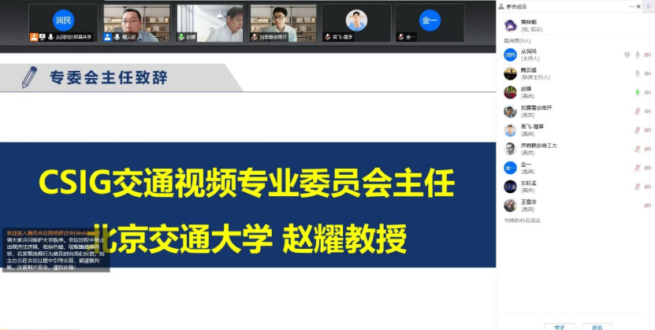
首先，哈尔滨工业大学的洪晓鹏教授作了题为“基于记忆空间拓扑保持的深度增量学习”的报告。洪教授针对深度神经网络在学习新任务新知识时的“灾难性遗忘”困境，围绕“记忆”的形式化，“记忆”的重要性质，以及“记忆”重要性质如何保持等问题，介绍了课题组在深度网络灾难性遗忘抑制方面的工作，并重点介绍学习与记忆相融合的深度增量学习框架，探讨了拓扑保持网络的使用、拓扑保持正则项的设计和增量学习的实验设置等内容。
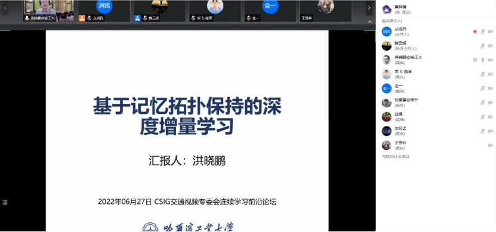
随后，南开大学的刘夏雷副教授作了题为“连续学习方法及应用”的报告。刘教授从应用入手，重点介绍了连续学习在多种不同计算机视觉任务上的应用，包括图像分类、图像生成、图像分割和图像检测等领域，并对连续学习进展进行总结和展望。
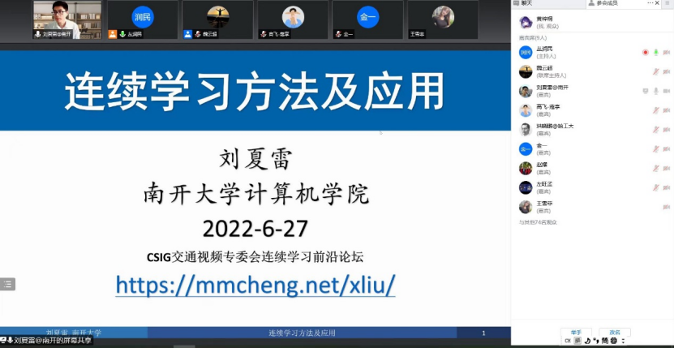
最后，本次活动主席、哈尔滨工业大学左旺孟教授对此次活动进行了简要的总结，并对两位讲者的精彩分享表示感谢。至此，本次研讨会圆满结束。
6月27日，科技创新2030—“新一代人工智能”重大项目 “连续学习理论和方法”项目进展季度研讨会以线上形式召开，项目责任专家西安交通大学薛建儒教授、华东师范大学贺樑教授，以及项目负责人、课题负责人、项目组骨干成员等相关成员20余人参加了会议，会议由哈尔滨工业大学左旺孟教授主持。
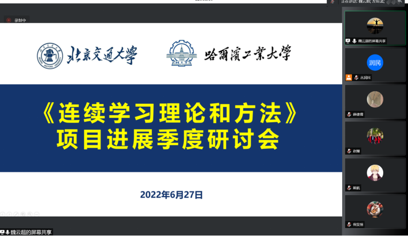
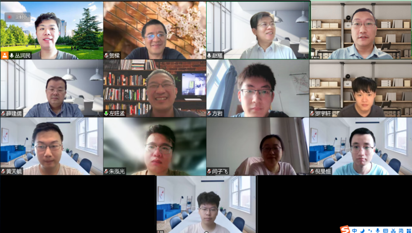
首先项目负责人北京交通大学赵耀教授从项目概要、研究内容、预期成果和季度进展四个方面对项目的整体实施计划进行了概括介绍。随后，课题1负责人哈尔滨工业大学左旺孟教授和课题2研究骨干北京交通大学魏云超教授分别进行了进展报告。紧接着，两位责任专家对项目的开展情况进行了点评，肯定了项目取得的阶段性研究成果，并提出了中肯的建议，主要包括进一步把握项目的内部完整性、课题间的协同性、相关技术研究要点的针对性等。会后，项目组召开内部会议，进一步梳理了责任专家提出的意见和建议，并对下一步的研究计划进行了讨论。
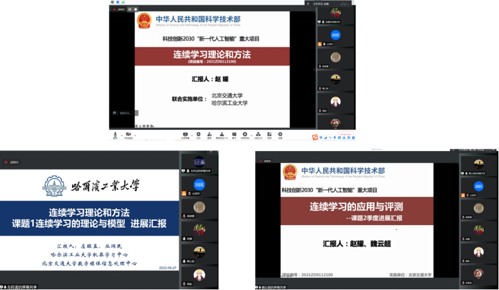
连续学习前沿论坛
时间：2022年6月27日下午14:00-16:00
地点：线上 #腾讯会议：738-670-079
直播链接：
会议日程
14:00-14:05 CSIG交通视频专委会主任 赵耀教授致词
14:05-14:10 全体参会人员合影
14:10-15:00 哈尔滨工业大学 洪晓鹏教授报告
15:00-15:50 南开大学 刘夏雷副教授报告
15:50-16:00 活动主席 哈尔滨工业大学 左旺孟教授总结
主持人：魏云超、丛润民
报告题目：《基于记忆空间拓扑保持的深度增量学习》
报告摘要：本报告将针对深度神经网络在学习新任务新知识时的 “灾难性遗忘”困境，围绕“记忆”的形式化，“记忆”的重要性质，以及“记忆”重要性质如何保持等问题，简要汇报我们在深度网络灾难性遗忘抑制方面的工作，重点介绍学习与记忆相融合的深度增量学习框架，探讨拓扑保持网络的使用、拓扑保持正则项的设计和增量学习的实验设置等内容，并汇报我们近期在去中心化的增量学习以及深度伪造的连续检测方面的工作。
报告人简介：洪晓鹏，哈尔滨工业大学教授，博导。历任芬兰Oulu大学博士后、Docent（芬兰副高、博士生导师）和西安交通大学特聘研究员，澳洲国立大学访问学者和美国马里兰大学帕克校区访问教授。在深度增量学习、视频监控、多机器人策略分配和脸部微小运动分析等方面开展了多年研究。先后主持国家重点研发计划课题、面上基金、芬兰信息技术学会博士后基金等项目。在IEEE会刊和CCF A类会议上发表论文50余篇。在面部微小运动分析方面的相关工作见诸美国《麻省理工技术评论》等国际权威媒体专文报道并获IEEE芬兰区最佳学生会议论文奖。带队获ECCV20 Visdrone挑战赛无人机航拍多目标追踪赛道等多项重要国内外比赛的冠亚军。中国图象图形学学会情感计算与理解专业委员会副秘书长，视觉与学习青年学者研讨会(VALSE)执行领域主席。受邀担任PRL和SIVP等期刊的客座编委和主流国际会议IJCAI、AAAI、ACM MM和ICME的领域主席或资深程序委员。
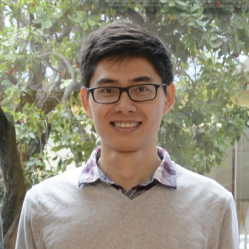
报告题目：《连续学习方法及应用》
报告摘要：连续学习的目的是像人类一样学习，在动态变化的环境中不断学习新知识的同时，避免灾难性遗忘旧知识，是新一代人工智能系统的必备技能之一。本报告将重点介绍连续学习在多种不同计算机视觉任务上的应用，包括图像分类、图像生成、图像分割和图像检测等领域。最后对连续学习进展进行总结和展望。
报告人简介：刘夏雷，南开大学计算机学院副教授，硕士生导师。博士毕业于西班牙巴塞罗那自治大学，获Cum Laude优秀博士论文奖。 CVPR 2020年Doctoral Consortium获得者。曾在美国西雅图亚马逊AWS AI LAB担任应用科学家实习生。博士后工作于英国爱丁堡大学。长期从事连续学习、无监督学习、小样本学习等面向开放环境的机器学习和图像感知。共发表学术论文20余篇，包含TPAMI、NeurIPS、CVPR、ICCV等。担任多个顶级期刊和会议审稿人、VALSE 2022年注册主席。
左旺孟，哈尔滨工业大学计算机学院教授、博士生导师。主要从事图像增强与复原、图像编辑与生成、物体检测与目标跟踪、图像与视频分类等方面的研究。在CVPR/ICCV/ECCV等顶级会议和T-PAMI、IJCV及IEEE Trans.等顶级期刊上发表论文100余篇，谷歌学术引用30,000余次。发表ESI高被引论文8篇。提出的DnCNN模型被正式收入MATLAB 2017b及后续版本的Image Processing和Deep Learning Toolbox，并被CV-News Magazine作为Main Story专题报道，目前最高单篇引用1900余次。担任人工智能学会模式识别专委会常委、中国图象图形学会机器视觉专委会常委、中国图象图形学会青工委执委，国家自然科学基金重点项目负责人。曾任ICCV2019、CVPR2020/2021、ECCV 2022等CCF-A类会议领域主席及IJCAI、AAAI等CCF-A类会议高级程序委员，现任顶级期刊IEEE T-PAMI和T-IP等期刊编委。
魏云超，北京交通大学教授、博导。曾在新加坡国立大学、美国伊利诺伊大学厄巴纳-香槟分校、悉尼科技大学从事研究工作。入选MIT TR35 China，百度AI全球华人青年学者榜单，国家级青年人才计划，澳大利亚人TOP 40 Rising Star，曾获澳大利亚研究委员会青年研究奖，中国图象图形学学会科技技术奖一等奖，计算机视觉世界杯ImageNet竞赛冠军。 Google引用10600多次。主要研究方向包括面向非完美数据的视觉感知和多模态数据分析。
丛润民，北京交通大学信息科学研究所、数字媒体信息处理研究中心副教授，硕士生导师，入选中国科协“青年人才托举工程”、“北京市科技新星”计划。主要研究方向包括计算机视觉、多媒体信息处理、注意力感知与显著性计算、遥感影像解译与分析、开放环境下视觉内容增强等。在TIP、TCyb、TII、TMM、TCSVT、TGRS、NeurIPS、CVPR、ECCV、AAAI、IJCAI、ACM MM等国内外学术期刊及会议上发表论文60余篇，其中CCF A/IEEE Trans 论文40篇，ESI热点论文2篇、高被引论文9篇；出版英文专著章节2部。担任Neurocomputing、IEEE Journal of Oceanic Engineering等SCI期刊编委。荣获IEEE ICME最佳学生论文奖亚军、天津市科学技术进步一等奖、中国图象图形学学会优秀博士学位论文奖（全国10篇）、IEEE CVPR杰出审稿人、第十五届北京青年优秀科技论文奖、北京图象图形学学会优秀博士学位论文奖（京津冀6篇）等。
因疫情和假期原因，五月份月度会于2022年6月9日下午14时线上成功召开，哈尔滨工业大学左旺孟教授、北京交通大学丛润民副教授以及课题相关研究生十余人参与会议，丛润民副教授担任主持。
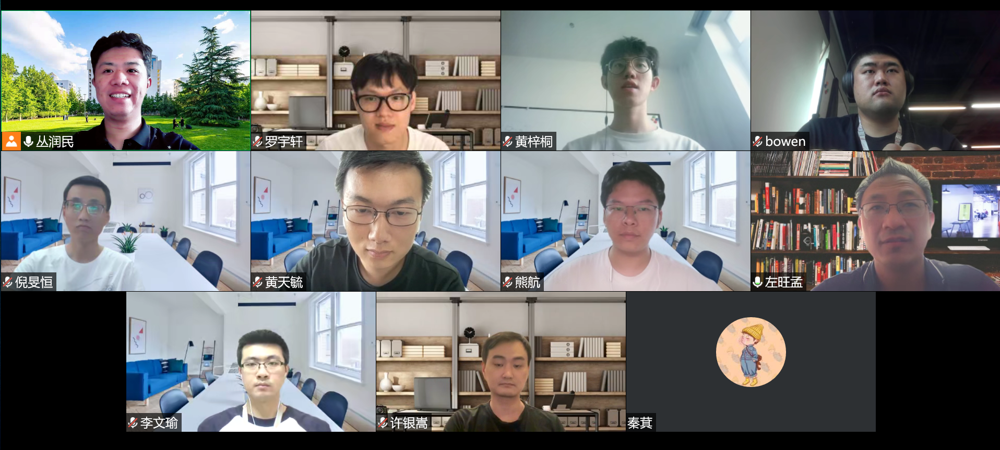
会议中课题组成员黄梓桐、罗宇轩分别进行了报告。首先，来自哈尔滨工业大学机器学习研究中心的黄梓桐同学做了关于弱监督物体检测（WSOD）方法研究的报告。在报告中，黄梓桐首先对WSOD任务定义和已有的经典方法进做了简要的介绍。然后分析了当前WSOD任务的存在的问题以及已有方法的不足。接着分别介绍了两篇机器学习研究中心在WSOD任务的研究工作：Boosting Weakly Supervised Object Detection via Learning Bounding Box Adjusters及W2N: Switching From Weak Supervision to Noisy Supervision for Object Detection。最后，到场的老师及其他同学和黄梓桐同学展开更深入的交流。
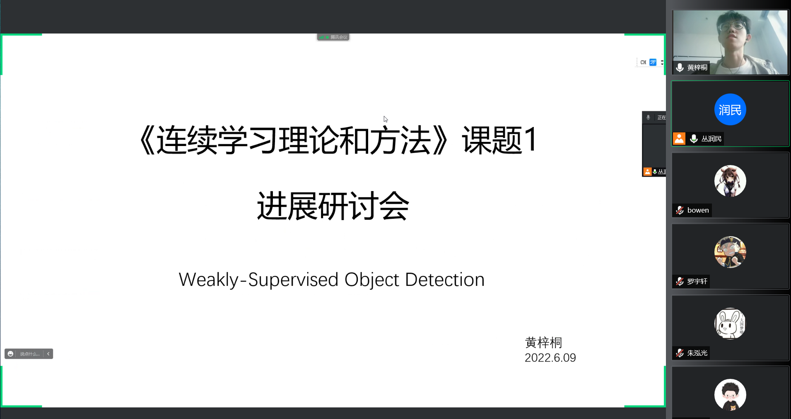
随后，香港城市大学的罗宇轩同学做了关于基于回放式连续学习的最新方法介绍。在介绍中，首先提出了两个回放式模型的问题：1.构造什么样的回放样本；2.回放样本起到什么作用。针对以上两个问题，分别介绍了MultiBand VAE 方法和CF-IL方法。前者介绍了如何考虑任务和类别间关联、生成边界清晰的回放样本；后者介绍了如何采用本身模型构建记忆样本缓解遗忘问题。最后对于两个关键问题进行进一步的讨论和分析。
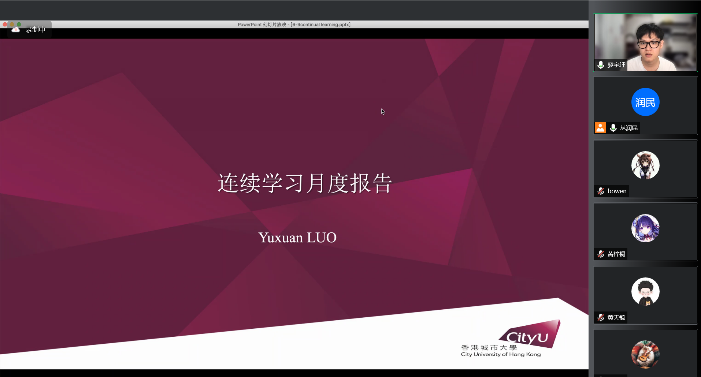
此次报告会的顺利开展有利于及时把握课题的研究动态，有利于研究方案与技术路线的进一步细化梳理，对课题的高效、顺利实施具有重要的推进作用。
2022年4月28日下午14时，课题1项目组组织开展了四月份进展讨论会，课题相关成员20余人参加了此次讨论会，受疫情影响，会议线上举行，课题负责人哈尔滨工业大学左旺孟教授担任主持。
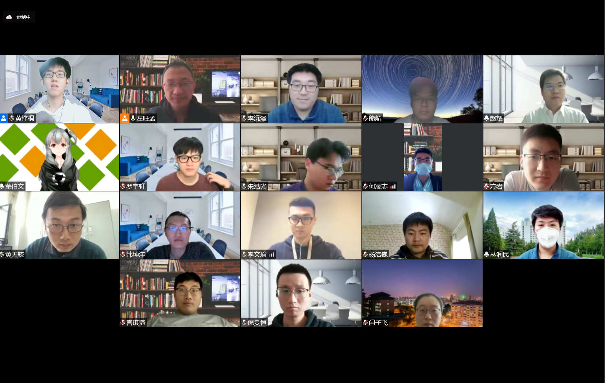
会议开始，项目负责人赵耀教授对此次活动的开展表示了高度的肯定和欢迎，并希望各位老师和同学们定期交流，掌握研究进度，紧密围绕课题任务书开展研究工作，力争做出有影响力、有曝光度的典型成果。
随后，课题组成员董伯文、罗宇轩和李文瑜分别进行了报告。首先，哈尔滨工业大学机器学习研究中心的董伯文同学做了关于基于少样本学习的视觉Transformer方法的报告。在报告中，董伯文首先对少样本分类任务定义和视觉Transformer及其演进做了简要的介绍，然后针对不依赖大规模预训练的视觉Transformer在少样本分类任务上的表现做了广泛的先行实验，并总结了这一实验设置下表现不好的原因。针对上述问题，董伯文提出了一套针对视觉Transformer在少样本学习任务上的训练框架，从方法和实验结果两方面做了细致的分析与讨论，并与近期相关工作在少样本分类任务上进行了对比和评价。
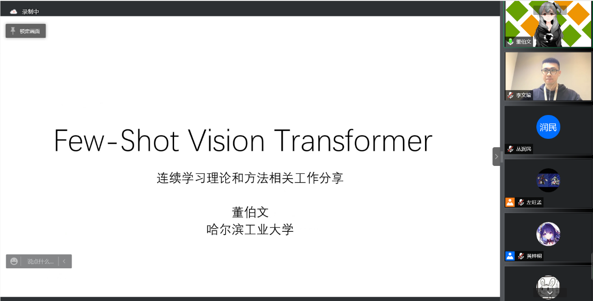
随后，香港城市大学的罗宇轩同学介绍了解决连续学习分类任务和跨模态检索任务的具体模型方法。其中对抗连续模型使用每个类别单个样本进行“回放”的方式学习任务间通用和特有信息，以此来解决连续学习任务；其中连续跨模态检索任务是首次进行探索和任务解构，研究了不同模态之间的偏移距离不同问题和遗忘问题。

最后，哈尔滨工业大学机器学习研究中心的李文瑜同学做了关于半监督人脸识别的报告。在报告中，李文瑜同学首先对人脸识别和半监督人脸识别任务做了简单的介绍。之后对半监督人脸识别的现状进行了概述，并指出了目前半监督人脸识别上的不足。最后，李文瑜同学对其针对现有半监督人脸识别问题的基于浅人脸数据半监督人脸识别工作，从方法和实验结果两方面进行了详细的论述。
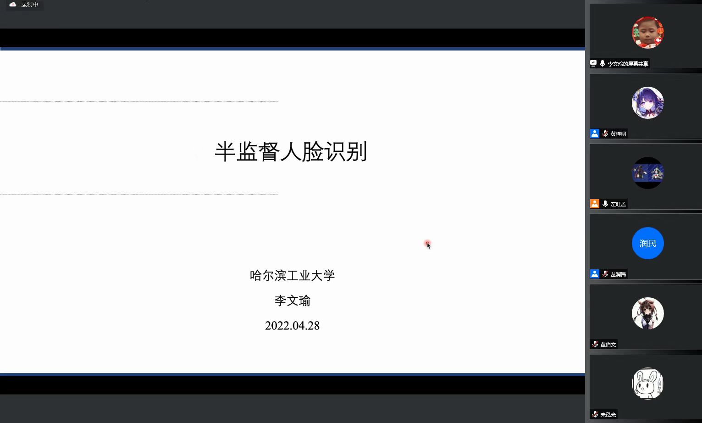
此次报告会的顺利开展有利于及时把握课题的研究动态，有利于研究方案与技术路线的进一步细化梳理，对课题的高效、顺利实施具有重要的推进作用。
4月2日，科技创新2030—“新一代人工智能”重大项目2021年立项项目“连续学习理论和方法”项目启动暨实施方案论证会以线下线上相结合的形式召开，线下会场设在北京交通大学。科技部高技术中心、项目牵头单位北京交通大学领导，科技部项目专家组、项目顾问专家组，项目负责人、课题负责人、项目组骨干成员及专项办相关成员40余人参加了会议。

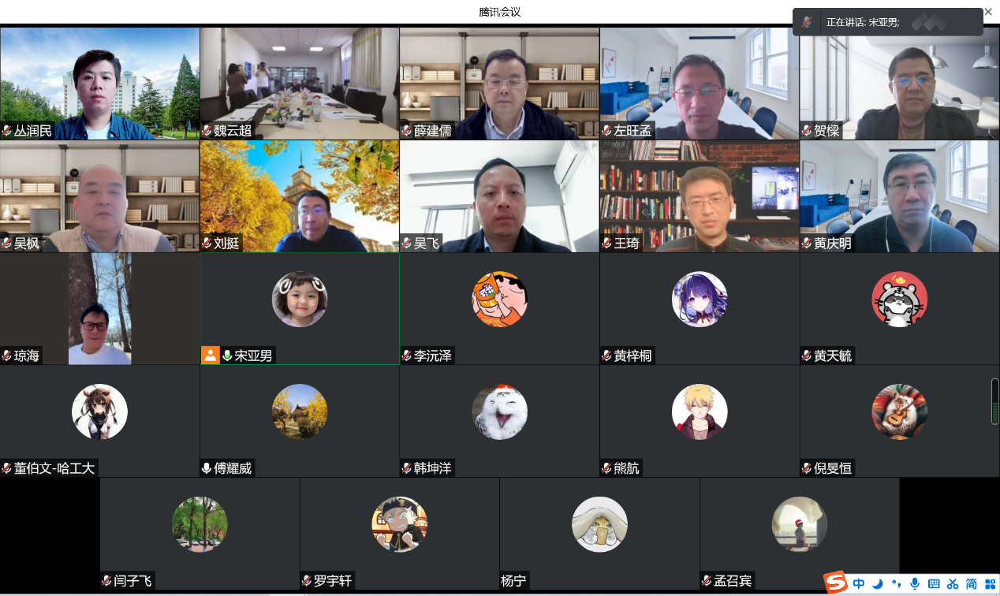
北京交通大学副校长余祖俊教授首先代表项目牵头单位对与会嘉宾致以诚挚欢迎，并介绍了学校在项目相关研究领域扎实的科研基础，并表示将全方位支持项目开展，保障项目顺利实施并取得突出成果。科技部高技术信息处傅耀威处长围绕重点专项设置的背景和目标进行了介绍，表达了对项目“突出亮点、实现突破、达到引领”的殷切期望，要求各方高度重视，做好统筹协作，高标准完成项目目标。
项目负责人北京交通大学赵耀教授从项目概要、组织管理、实施计划、成果与考核方式及保障措施等五个方面对项目实施方案进行了详细介绍。与会专家重点围绕项目的核心技术创新点、项目亮点特色成果、项目组织管理方案的落实、课题与承担单位接口等方面进行了质询，并提出了具体意见建议。最后，专家组通过质询讨论形成评估意见，认为项目实施方案与项目任务书要求一致，项目阶段目标和分工明确，技术路线和计划安排合理，实施方案合理可行，一致同意通过项目的实施方案论证。
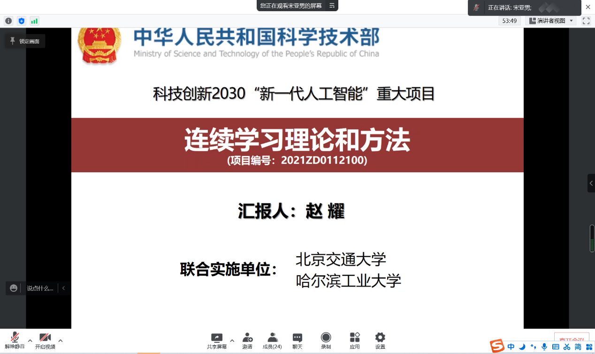
本项目在连续学习范式层面和人机协同层面上具有重要理论科学价值、在实际应用层面上具有重要意义。通过本项目的研究，有望在连续学习理论方面取得突破，并在应用层面上形成一系列相关任务的开源基准数据集、软件框架及评测标准，打造连续学习应用示范新标杆。